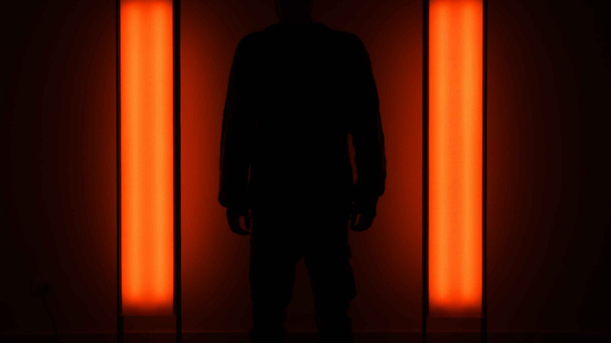
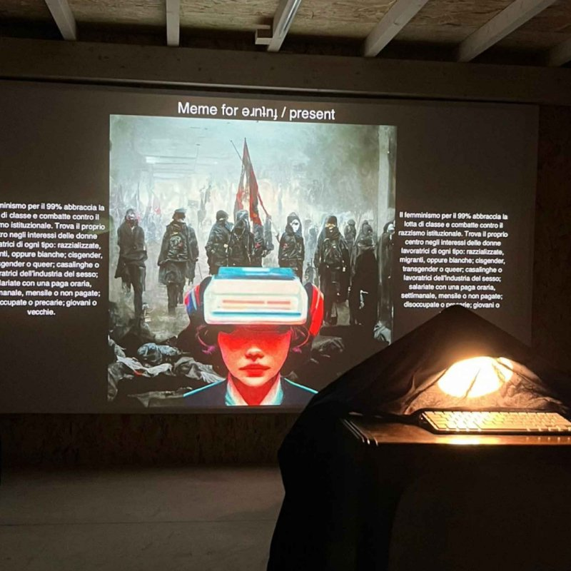
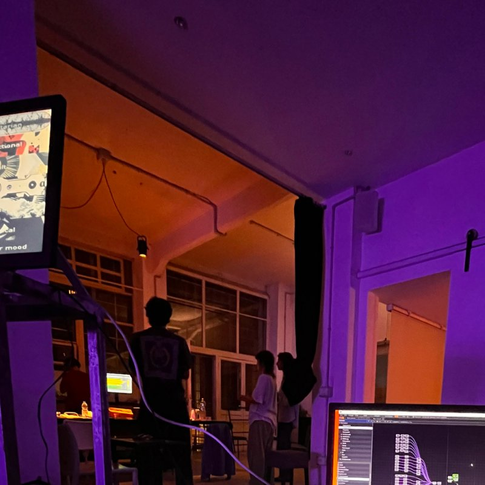
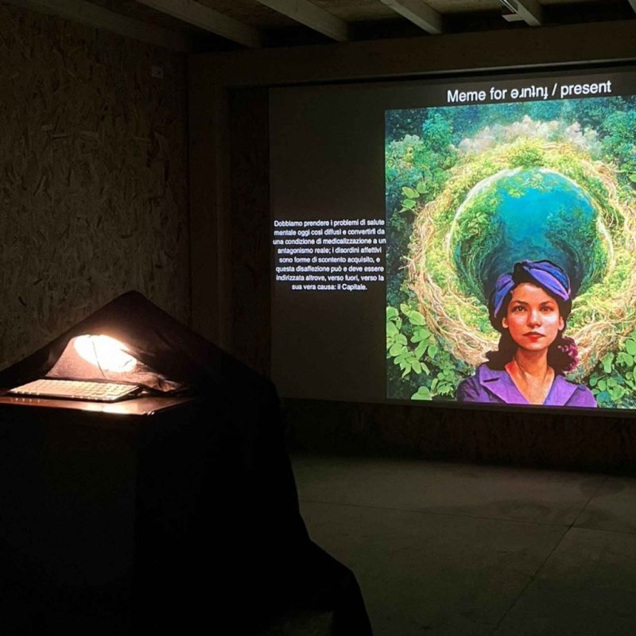
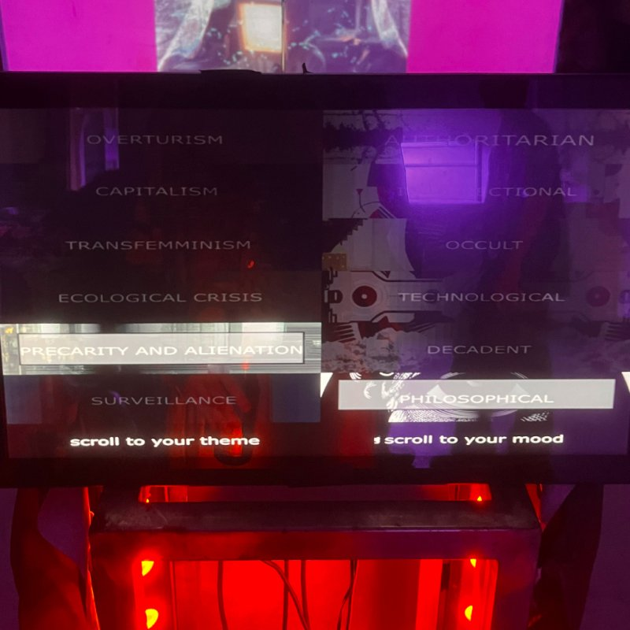
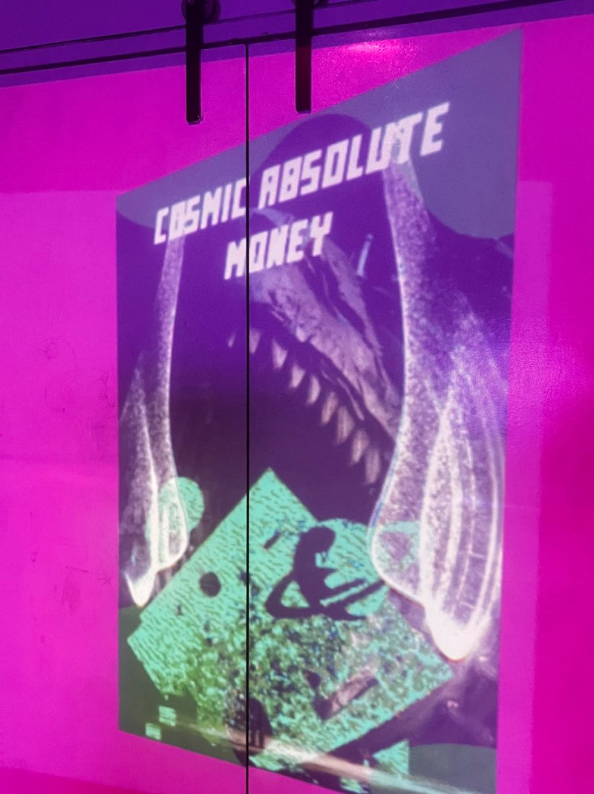

Poster Generator
Interactive installation for speculative political posters

How many of your choices did your algorithm make?
The project was born as a university exam and became something larger. The starting point is media bombardment: in thirty seconds of Instagram reels we can cross potentially infinite and incompatible content. How many of our political, cultural, ethical positions are truly ours — and how many are the product of a pseudo-passive contamination we didn't choose to undergo?
Capitalist realism understood this perfectly: you don't just consume goods, you consume the social, the cultural, the law. And you convince yourself that that is your position.
"The great power of the governmental machine could be carried out by a random machine launching slogans — the indifference with which they treat people's lives is more or less the same as when they roll dice at Risk."
A poster generator with pre-built databases on six social themes. The theme is chosen by rolling a die — the tone of voice, moderate, neutral or extreme, by the intensity of the roll. The posters produced mix paradox and surrealism to ridicule all positions in contemporary political debate, where everything is slogan and nothing is real. A situationist dynamic: détournement as a critical tool.
The system evolved over time — from the physical die to a touchscreen where theme and tone can be chosen and intersected manually. Each version is a new iteration of the same critical device.






The audience interacts with the system directly — rolls the die or touches the screen, chooses the theme, the tone, the intensity. The poster is generated in real time before their eyes. The gesture is simple, almost banal. The result is always slightly absurd, always slightly recognisable.
That's the point: the poster generated by the machine is not so different from the one circulating yesterday on social media. The random machine and real political debate produce the same intensity, the same format, the same vagueness. Exhibited at DAS Bologna after the residency won during Collagene, and in Rome at LMNL Space following the INSTALL workshop — collectively with the other artists.
